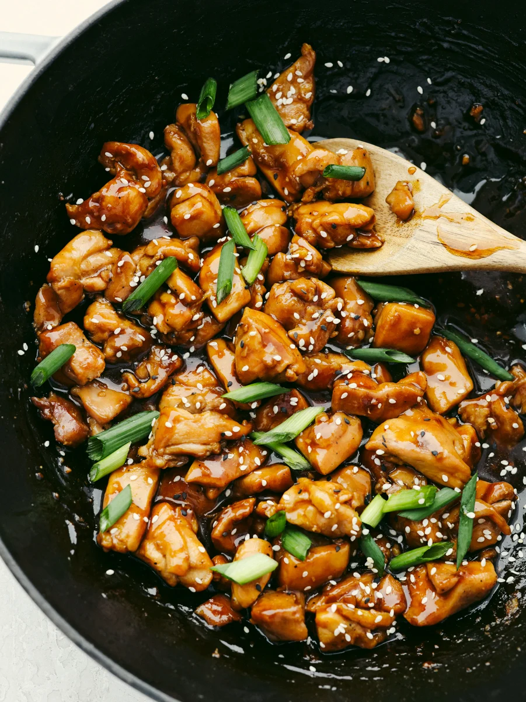

Chicken Teriyaki

Description
Chicken Teriyaki is a dish made fomr juicy chicken thighs, seared then tossed in a sweet, gingery sauce. Served with white rice and sauteed veggies.
Ingredients
- 1.5 pounds chicken thighs
- 4 Tbs Sake, divided
- 1 Tbs Cornstarch
- 2 Tbs Grapeseed Oil
- 1 2in piece of ginger, minced or grated
- 1/4 Cup Soy Sauce
- 1/2 Cup Mirin
- Black Pepper
- Green Onion
Steps